광산 승강기, 모양·모션 3종 + 층 선택창 3종
실제 게임 0층 승강기 자리에 후보 모델을 넣어 캡처했어요. 각 시안은 PC 기준 ① 대기(문 열림) ② 탑승(문 닫힘) ③ 내려가는 중 순서이고, 마지막은 모바일 탑승 컷이에요. 공통으로 충돌체를 넣어 몸이 기둥을 통과하지 않게 하고, 바닥 구멍으로 내려간 뒤 화면이 어두워지며 층에 도착해요.
A. 나무 도르래 승강틀
네 기둥 나무 틀 위 도르래 바퀴, 난간 세 면과 앞쪽 여닫이 문. 지금 있는 사다리·갱도 입구와 같은 나무 결이라 가장 자연스럽게 섞여요. 내려갈 때 도르래가 돌고 밧줄이 길어져요.
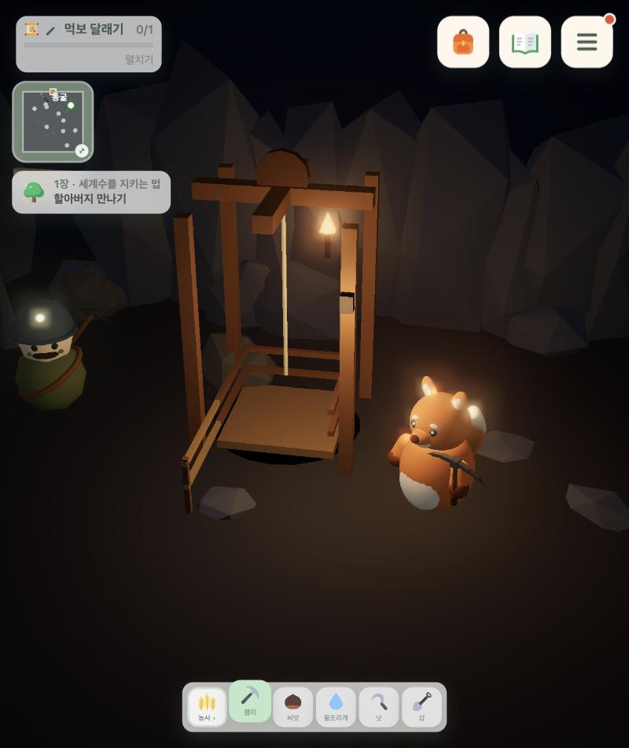
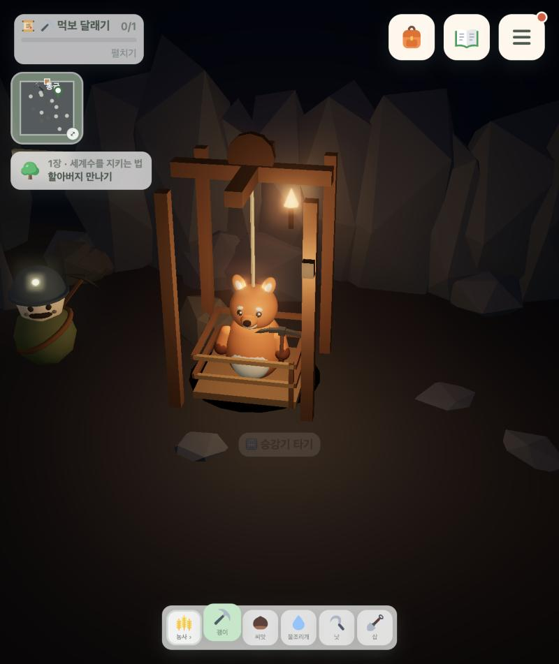
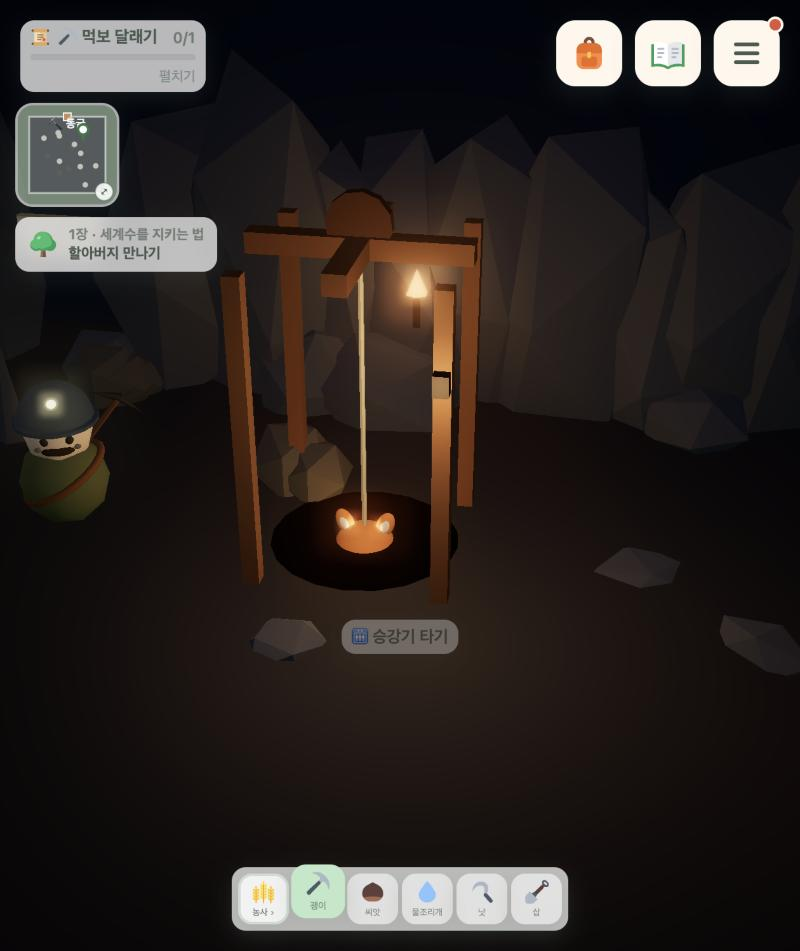
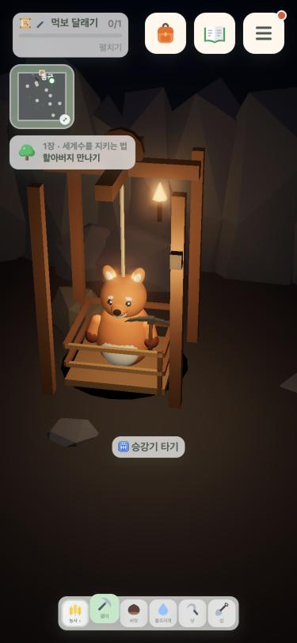
B. 철제 케이지
검은 철 기둥, 쇠창살 케이지와 옆으로 미끄러지는 황동 문, 노랑·검정 발판 띠, 케이지 안 등불. 위에서 황동 톱니가 돌아요. 가장 "승강기" 같지만 숲 마을 톤보다 산업적이고, 창살이 캐릭터를 가려요.
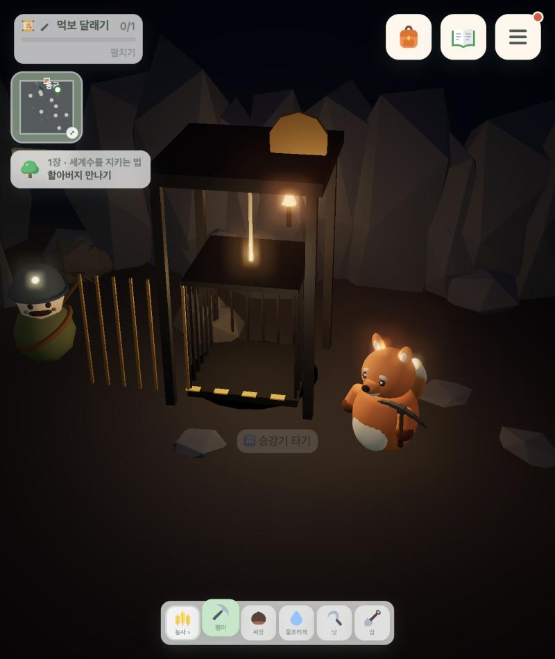
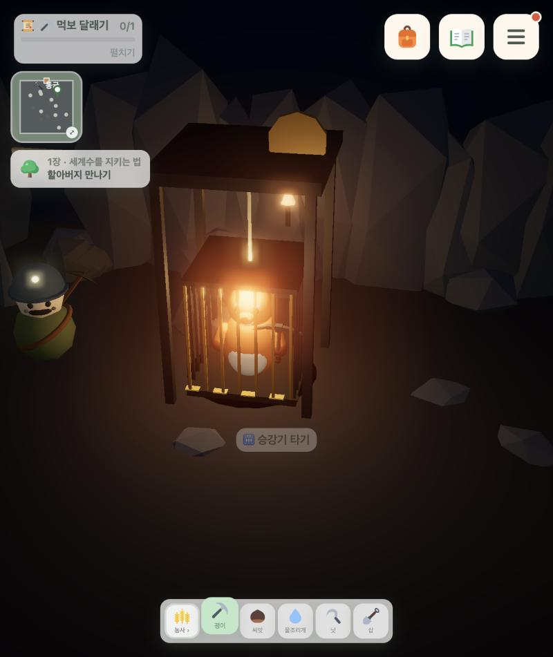
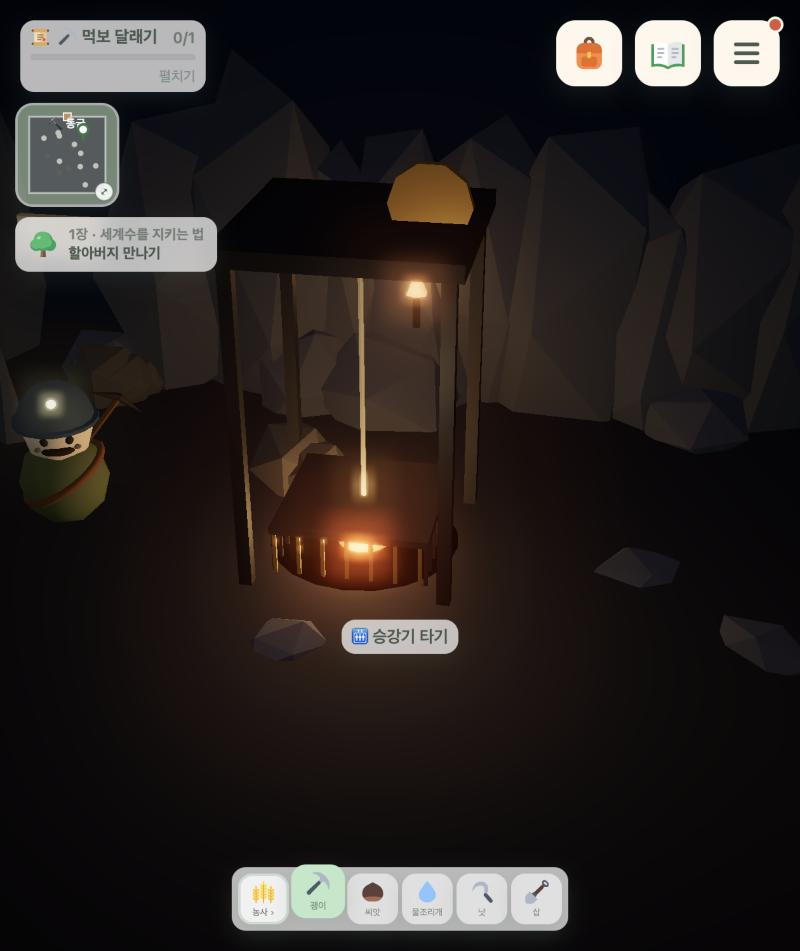
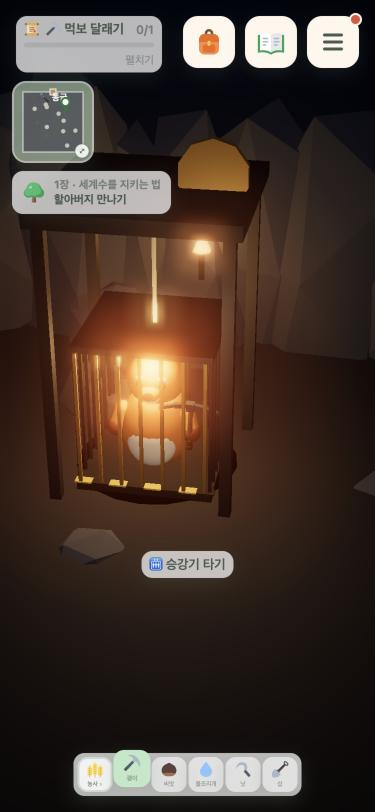
C. 두레박 바구니
나무 가로대에 밧줄 세 가닥으로 매단 큰 나무 통, 옆에 손잡이 감는 틀. 캐릭터가 통에 쏙 들어가 귀엽고 숲 톤에 맞아요. 내려갈 때 손잡이가 돌아가요. 대신 승강기보다는 우물 두레박 느낌이에요.
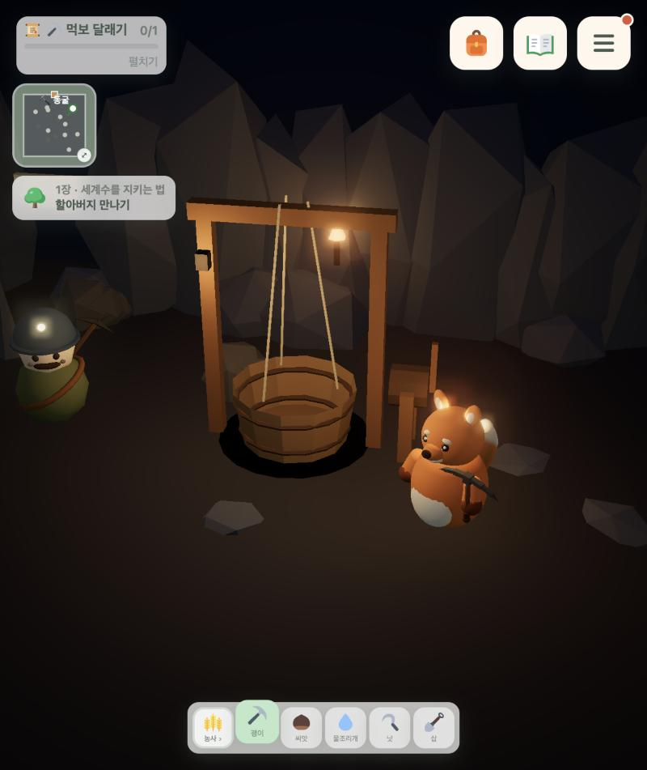
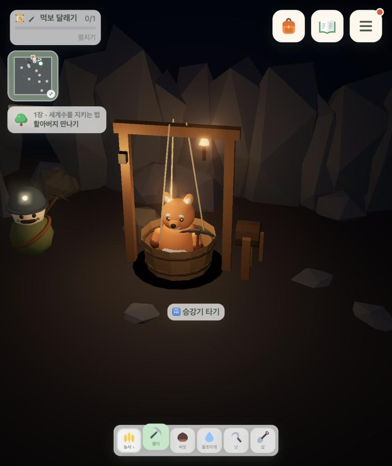
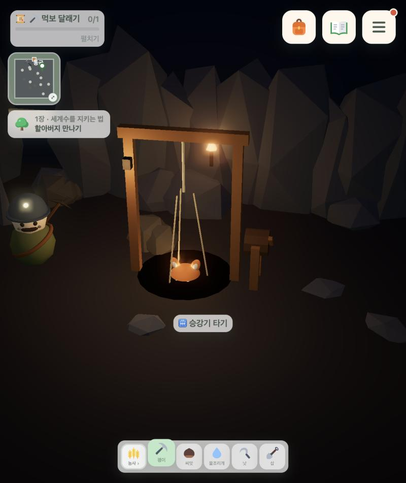
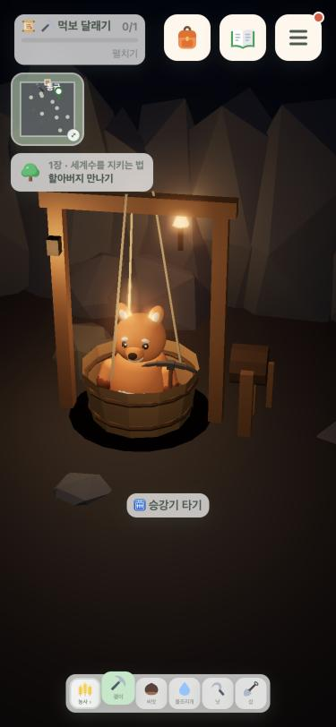
층 선택창 3종
예시: 지하 15층까지 가 본 상태(1·5·10·15층 열림, 20층 잠김). 왼쪽은 PC 화면 폭, 오른쪽은 375px 폰 폭이에요.
가. 세로 목록 (지금 안내 창 모양)
기존 안내 카드에 층 버튼을 세로로 쌓아요. 가장 깊은 층만 초록으로 강조. 익숙하고 글자가 커서 읽기 쉽지만 세로로 길어져요.
나. 승강기 버튼판
나무·황동 버튼판에 동그란 층 버튼. 가장 깊은 층에 금색 테두리. 승강기다운 맛이 있고 정사각형이라 모바일에서도 짧아요.
다. 아래 시트 칩
화면 아래에서 올라오는 얇은 시트에 층 칩을 가로로. 가장 덜 가리지만 칩이 작아 손가락으로 누르기 덜 편해요.